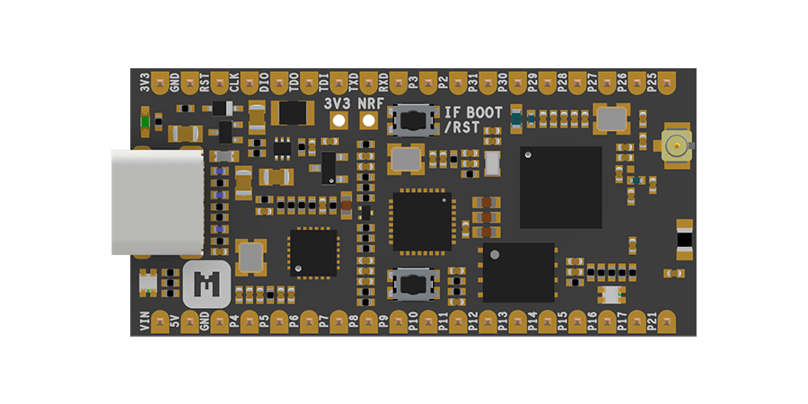
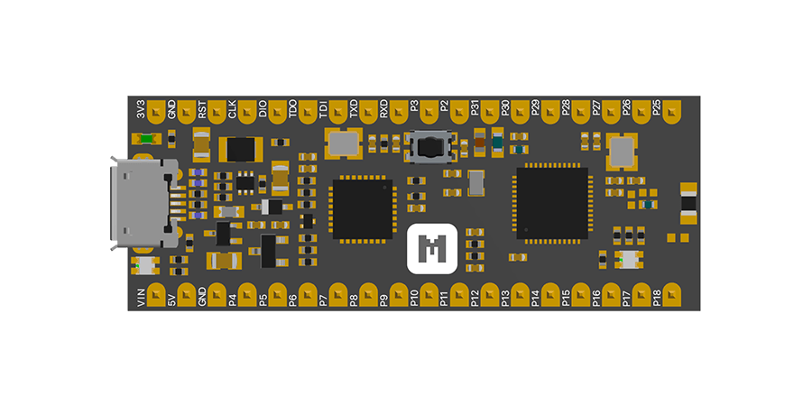

Base Dock
Grove compatible dock for building rapidly IoT applications with nRF52832-MDK or nRF52840-MDK¶
Description¶
The Base Dock is an essential tool allowing you to build rapidly Internet of Things applications. It is an ideal add-on to the existing nRF52832-MDK and nRF52840-MDK development boards.
The Base Dock can be powered by only one AA battery, and it also features a power button and a PCB NFC antenna. It is also Grove compatible, which means you can connect easily and quickly sensors with the 4 Grove connectors.
For more about Grove, please visit Seeed Studio Grove page.

Features¶
- Work with nRF52832-MDK and nRF52840-MDK development boards
- Low-cost and convenient for Mesh Networking applications
- Grove compatible with hundreds of Grove modules supported
- NFC tag-A PCB Antenna available
- AA Battery power supply with step-up converter integrated
- Power Button with Latching Circuit
- Battery level sensing
Hardware Specifications¶
- Dual 2x18 Socket Headers compatible with nRF52832-MDK & nRF52840-MDK
- 4 Grove connectors with UART/I2C/I2S/PDM/QDEC/SPI/ADC selectable
- NFC tag-A PCB Antenna available
- One Power Button with Latching Circuit
- AA Battery Holders
- Synchronous, Step-up Converter with VIN>VOUT Down Mode Operation
- 0.8V-to-4V Input Range
- 3.3V Output with Over-Current Protection
- Battery level sensing with 1:2 voltage divider on AIN2
- Low power consumption: 5uA Shutdown Current; 145uA Idle Current
- Measures 2.28" x 2.14" x 0.67" (58mm x 54mm x 17mm)
Block diagram¶
{kind=link}
Hardware Resource¶
| Releases | Design Files |
|---|---|
| V1.0 | Base Dock V1.0 Block Diagram Base Dock V1.0 Schematic Base Dock V1.0 Board File |
Related Products¶
| nRF52840-MDK | nRF52832-MDK |
|---|---|
|  |  |
Create an Issue¶
Interested in contributing to this project? Want to report a bug? Feel free to click here: